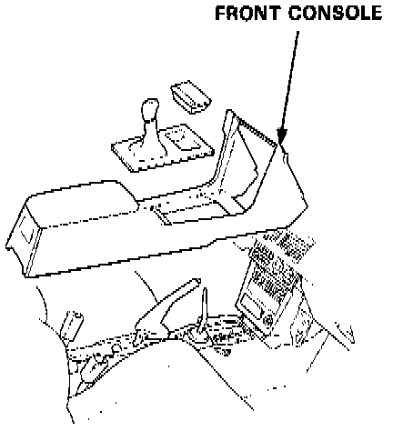
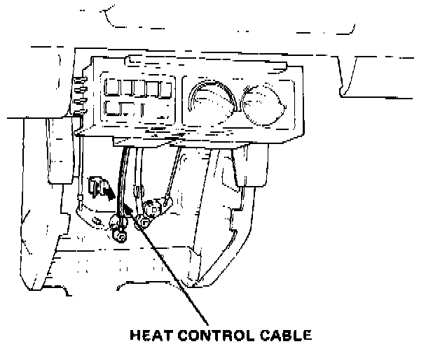
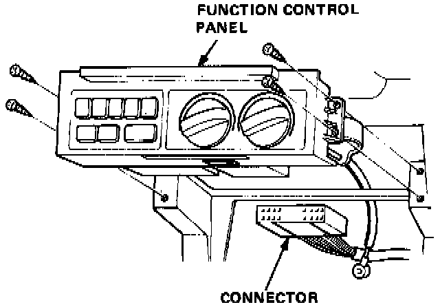
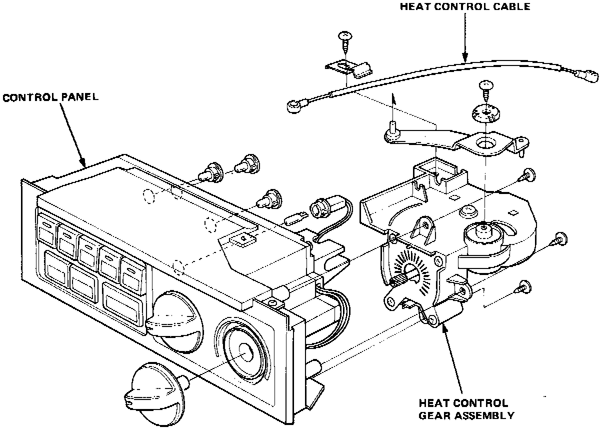

Manual Climate Control
FUNCTION CONTROL PANEL REMOVAL
1. Remove the screws, then remove the front console.
2. Remove the radio/cassette player.

3. Remove the heat control cable from the heater.

4. Remove the screws (4).
5. Disconnect the connector and remove the function control panel.
Install in the reverse order of removal and make sure the heat control cable is properly adjusted.

DISASSEMBLY
Refer to image for disassembly details.